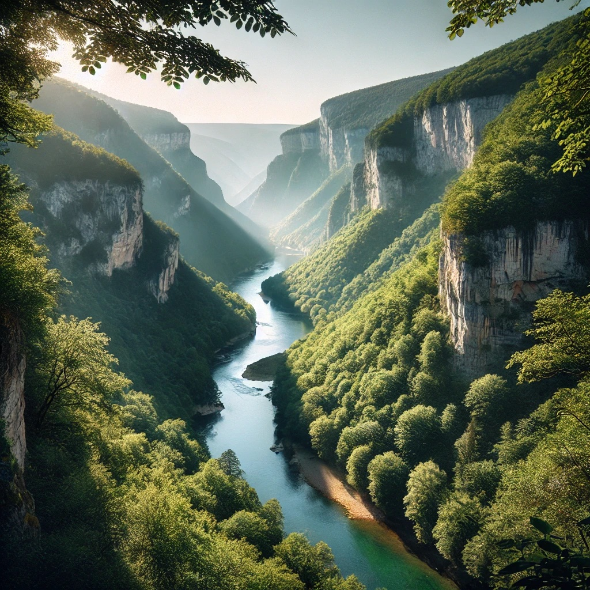

Les Gorges de la Sioule
Les Gorges de la Sioule sont un lieu exceptionnel, où la nature sauvage se mêle à des paysages sculptés par l'eau et le temps. Ce canyon naturel offre des panoramas spectaculaires, avec des falaises imposantes, des forêts denses et la rivière Sioule serpentant dans la vallée. C'est un endroit parfait pour les amateurs de photographie et ceux qui recherchent des moments de tranquillité au cœur de la nature. Vous pourrez également apercevoir des oiseaux rares et une flore abondante qui caractérisent cette région préservée.

Détails techniques
Durée de la randonnée : De 2 à 4 heures selon l'itinéraire choisi.
Difficulté : Variable. Certains sentiers sont faciles, tandis que d'autres présentent des passages
escarpés.
Distance : Entre 6 et 10 km. Il est possible de combiner randonnée et activités comme le
canoë.
Info : Un parking gratuit est disponible près du point de départ des randonnées.